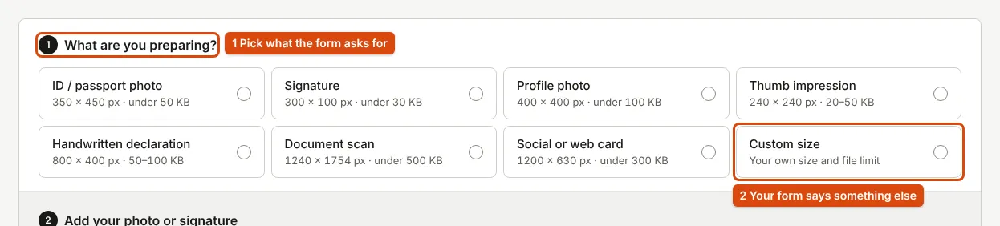

How to Resize a Photo for an Application Form
Read the requirement on the form, pick it in the resizer, place the crop, and download only when every row of the result table has a tick.
What this tutorial covers
Application forms usually ask for a photo with three things fixed: a pixel size, a file size limit in KB, and a format. The passport photo resizer and the general image resizer produce exactly that, in your browser. This page lists the clicks. Why the order of crop, size and compression matters for sharpness is explained in getting a photo under a KB limit without blur, and taking a good photo in the first place in the passport photo at home guide.
Before you start
- The requirement from the form: the pixel size (for example 350 × 450 px) or a size in centimetres with a DPI, the maximum and any minimum in KB, and the format (usually JPEG).
- The original photo, not a copy that was already shrunk or forwarded through a chat app. JPG, PNG, WebP, GIF, BMP and AVIF files up to 50 MB are accepted.
- An iPhone photo in HEIC format must be converted first: the resizer cannot read HEIC. Share it as JPG, or set the camera to save in the Most Compatible format.
- One or two minutes. For a whole group of photos, see processing many photos at once.
Step 1: Choose what you are preparing
Open the image resizer. The first step asks What are you preparing? and offers eight choices, each with its pixel size and KB limit: ID / passport photo (350 × 450 px, under 50 KB), Signature, Profile photo, Thumb impression, Handwritten declaration, Document scan, Social or web card and Custom size.

Select the one that matches your form. The panel folds into one line, for example ID / passport photo 350 × 450 px · under 50 KB · JPEG, with a Change button to pick again. The passport photo resizer starts with ID / passport photo already chosen, so you can go straight to step 2. A preset is a common size, not a promise that a particular portal accepts it: always compare it with the form.
Step 2: Add the photo
Select Choose image and pick the photo, or drag it onto the box. On the image resizer, No image handy? Try a sample image loads a made-up image that suits your choice (a portrait for a photo, a scribble for a signature, a page for a document) so you can try the steps first.
What you see: a bar with the file name, its pixel size and its size in KB, for example test-portrait.jpg (1200 × 1600 px, 428.9 KB), with Replace and Remove. The status line reads Ready to edit.
Step 3: Place the crop
Under Position it in the frame, drag the photo so your face is centred with a little space above the head. The frame already has the shape of the output, so nothing is stretched. Arrow keys move the photo, and + and − zoom. The buttons below rotate it 90 degrees left or right, zoom out or in, and Reset puts it back.

Step 4: Change the size or limit, only if the form differs
Most of the time you can skip this. If the form asks for something other than the choice you made, open Size, file limit and format (it says Set by the requirement. Change only if your form asks for something else.):
- Width (px) and Height (px), with a lock that keeps the proportions.
- Unit: switch to Centimetres (cm) or Inches (in) when the form gives a printed size, and set Print DPI to the value it states; pixels, cm, DPI and KB explains the conversion.
- Minimum (KB), optional, and Maximum (KB).
- File format: JPEG unless the form names another, plus Crop shape, Background fill and Add a name and date strip for forms that want a name and date printed under the photo.

Changing any value switches the choice to Custom size, and the summary line shows your values.
Step 5: Resize, then read the result table
Select Resize and compress. The tool crops, resizes to the exact pixel size, and searches for the highest quality that fits under the limit. It then reads the finished file back and checks it.

What you see: Ready to upload with a sentence such as Under the 50 KB limit, at the exact size requested., the Download image and Adjust again buttons, a preview you can switch between Result and Original, and a table that compares Required with Your file for file size, dimensions and format. Each row that is met has a tick. In our test the 1200 × 1600 px sample portrait came out at 26.47 KB (27,109 bytes), 350 × 450 px, JPEG.
Step 6: Download and check
Select Download image. The file is named after your photo and the choice, so test-portrait.jpg becomes test-portrait_Passport_Photo_350x450.jpg. Open it once at full size and look at the eyes and the edges of the face. If anything is off, select Adjust again to move the crop or change a setting; the original stays loaded.
What you get
- One image at exactly the pixel size you chose, under the maximum (and over the minimum, if you set one), in the format you chose.
- A table that shows the exact byte count, because portals count bytes: 1 KB here is 1,024 bytes, so a 50 KB limit means at most 51,200 bytes.
- A new file without the original's hidden details such as location and camera data, because the image is saved again from scratch.
If something goes wrong
"PNG needs 196.0 KB at this size."
PNG cannot lower its quality, so a photo saved as PNG is large. The message suggests the fixes: raise the limit, reduce the dimensions, or choose JPEG or WebP under File format. Use JPEG when the form accepts it.
"iPhone photos (HEIC) aren't supported."
Share the photo as JPG, or change the camera format to Most Compatible, and add it again.
The portal still refuses the file
Size is only one check. Read the portal's message against photo upload errors and fixes. If a file just under the limit is refused, the portal may count 1 KB as 1,000 bytes: lower the maximum by a few KB and resize again.
The face looks soft or blocky
The limit is tight for that many pixels. Use the smallest pixel size the form allows, and start again from the original photo rather than from a file you already compressed.
Sources
- MDN Web Docs: Image file type and format guide, JPEG, PNG and WebP
- Library of Congress: JPEG Image Encoding Family, how JPEG quality trades size for detail
- Ministry of External Affairs: Instructions for filling the passport application form, an example of official photo rules
Every step on this page was followed in the current resizer, and the figures were measured with it on our synthetic sample portrait. Found a mistake? Report an error.